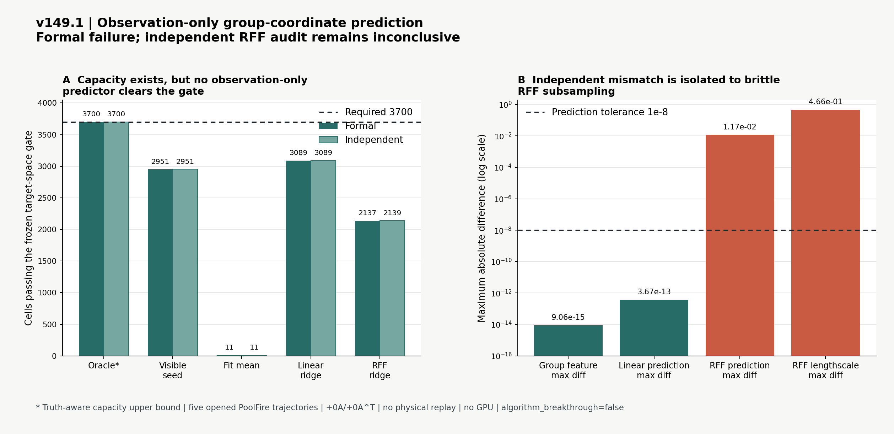

优化量
同精度前提下减少完整 A/A^T；随后再实测 fresh-process wall time 与 whole-pipeline peak RSS。
我研究的不是用神经网络替代物理，而是让一个只读取多视角观测与已知几何的低成本初始化器，为 CGLS / PCGLS 提供更好的三维起点。在最终场、完整梯度、内部梯度和观测误差都不劣于标准重建时，再判断它是否真正减少昂贵的 A/A^T 调用、端到端时间与峰值内存。
algorithm_breakthrough，未过外部与真实实验门背景纹影从多视角位移反推三维折射率或密度场，是病态且计算昂贵的逆问题。C 路线把学习模块严格限制为 warm initializer，后端仍使用显式物理算子和未修改迭代器，因此可以分别核查精度、调用成本、真实资源消耗和失效边界。
32×16×16 粗网格场同精度前提下减少完整 A/A^T；随后再实测 fresh-process wall time 与 whole-pipeline peak RSS。
逐单元检查 field、full-gradient、interior-gradient、observation 相对 Zero-K2 / Zero-K4 的八个门。
v149.1 是已开封 PoolFire straight-ray 代理上的完整轨迹外折。它保留 v148 的容量 headroom，但没有形成通过的 deployment predictor；独立 RFF 数值链不闭合，所以没有物理 replay、资源、外部泛化、curved ray 或真实 BOST 结果。
正结果说明哪一段机制值得保留，负结果说明下一步不能继续把算力花在哪里。
1515/1515 精度兼容；exact 调用减半，fresh wall 中位下降 43.49%，三类 RSS p90 过门。仅限已开封 PoolFire 同族代理。
84/84 对 78/90；12 个失败全部暴露在内部梯度，说明全局 residual gate 看不见局部风险。
85/90 可行，五个单元的严格区间为空；增加一个阻尼系数无法修复局部梯度。
新增方向非退化但严格容量仍为 89/90，最后越线只减少 1.55%。由此停止堆全局径向阶数。
F12+ 没有复现 F30 的净伤害，停止围绕单帧扩建局部窗口。
九维线性预测存在信号，但候选集合不足；这一负结果直接触发 v96 的表示结构升级。
四个 residual/geometry-only 频谱方向修复旧九维 family 的最后缺口；三档几何全部 30/30，独立复算逐值一致。
条件容量门关闭四系数训练，要求旧九维与新四维联合适配。
mean 与 linear ridge 同为 75/90，RBF 为 71/90；270 次独立精确回放确认普通坐标回归未封口。
正式多轨迹评估覆盖 2970 个 candidate cells、990 个 control cells、270 个 predictions 和 90 个 input bundles；独立复算最大数值差为 0。
rank-4 的总 exact-call 预算低于候选，但五条轨迹 0/5；rank-32 更贵且同样 0/5。该结果保留为 v114 之前的历史父控制证据。
回看 v112.1 完整证据oracle 为 3700/3700、5/5；线性 ridge 为 3089/3700、0/5，RFF 正式/独立为 2137/2139 且均 0/5。浮点哈希子集导致 RFF 不可复现，因此当前 predictor family 关闭但不声称数学不可能。
INCONCLUSIVE_INDEPENDENT_RECOMPUTATION_GROUP_KRYLOV_PREDICTOR_V149
全局四系数 oracle 只通过 18/20 哨兵与 3/5 轨迹尾部；按相机/分量组使用四阶系数后达到 20/20 与 5/5。
HEADROOM_BLOCK_DETECTOR_KRYLOV4_V148
真值可见跨轨迹跨度通过 14/20 哨兵、1/5 轨迹尾部；同轨迹上限为 18/20、2/5。它关闭 K≤32 的样本近邻跨度，并直接触发 v148 的当前样本物理谱诊断。
FAIL_LOCAL_SPAN_CAPACITY_V147
local-only、local + moments 与 local + pose coupling 均只通过 1/20；同轨迹上界最好 9/20，五条轨迹尾部全部失败。独立数组最大差 8.88e-16。按合同不启动 3700 单元 Stage B。
FAIL_DIRECTION_CONDITIONED_IDENTIFIABILITY_V146
这个部署输入诊断不读取真值。五条轨迹、三套几何、六张坐标图和十个相邻帧对中，900/900 可辨识，但非零位移与超过数值容差的一致性改善均为 0；独立重算 shift 与改善最大差也为 0。
阅读 v116 完整证据
从 2026-07-06 起，完整保留正式运行、独立复算、负结果、路线切换和证据边界。协议、下载、网页和测试数量只算工程保障，不算算法成果。
关键数字必须由第二条实现重建输入、指标、门和调用账；验证未通过时不进入主页结论。
v98 排除普通联合回归；v109 修复支撑混杂；v110 定位重复重采样误差。v111 采用坐标先复合与原始张量单次 gather 后，首次得到可独立复算的未见形变学习信号。
单工况容量、漂亮均值、调用数下降或页面完善，都不能单独写成算法突破与论文成功。
任何早期阶段失败都会准确记录并重排方法，不通过更大的网络掩盖表示或物理问题。
A/A^T。高速反应流会产生连续帧和多视角数据。每帧少一次完整 forward / adjoint，收益会随实验批次持续累积。
学习模块只生成起点，最终解仍由显式成像模型和经典 Krylov 求解器精化，便于诊断误差来源。
Case 6 证明平均场变好不等于内部梯度安全。逐单元八门能直接暴露会损伤火焰局部结构的候选。
研究路线由最新负证据驱动，而不是由模型名、算力规模或已经投入的时间驱动。
冻结一个改变物理可观测状态或 correction target 的小型 CPU 容量门；完整轨迹 headroom 出现前不扩大预测器，也不租 GPU。
只有表示容量全过、严格 observation-only 小模型出现稳定外折 headroom，且 CPU 原型确认训练吞吐成为瓶颈时才租算卡。
公开独立工况通过后，接入位移图、相机内外参、视角定义、重复测量噪声、现有重建接口和认可基线。
历史状态保留：此前“当前判决：v111 出现独立复算的单轨迹学习信号，正式泛化门尚未开始”只描述 pilot；当前状态已更新为 Formal Stage A 15/15。
历史 pilot 入口保留：v111：未见双轴坐标变化上出现可独立复算的学习信号；原图文件 nine_view_diffeomorphic_ray_conditioned_warm_pilot_v111.png 仍可从历史资料中访问。
早期全课题组调研、19 个候选选题、604 篇论文入口、教材库、术语索引和旧实验链都完整保留，但不再占据毕业设计主页的主要篇幅。
{kind=link}